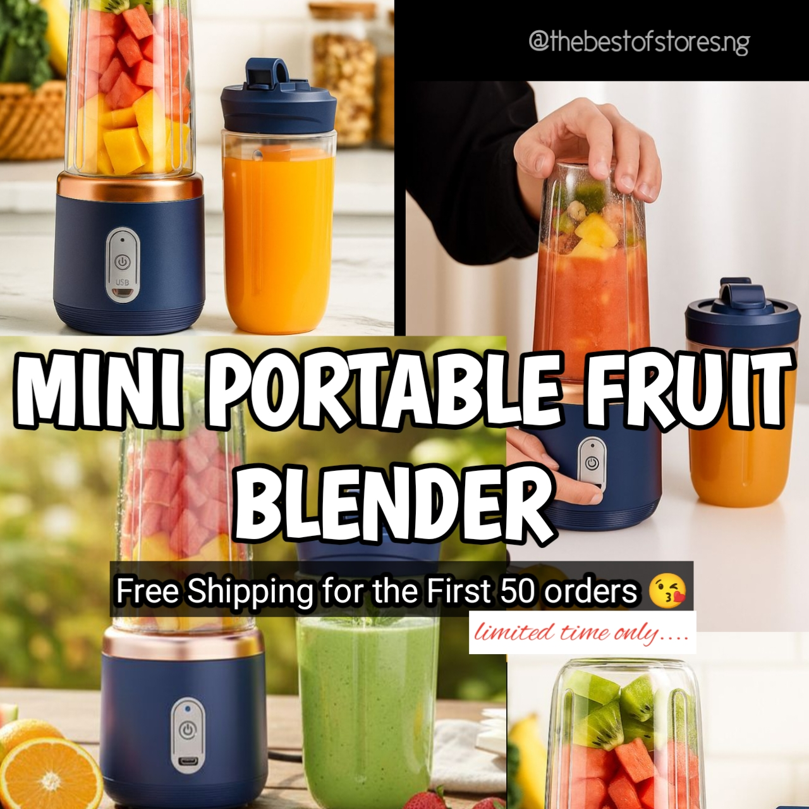
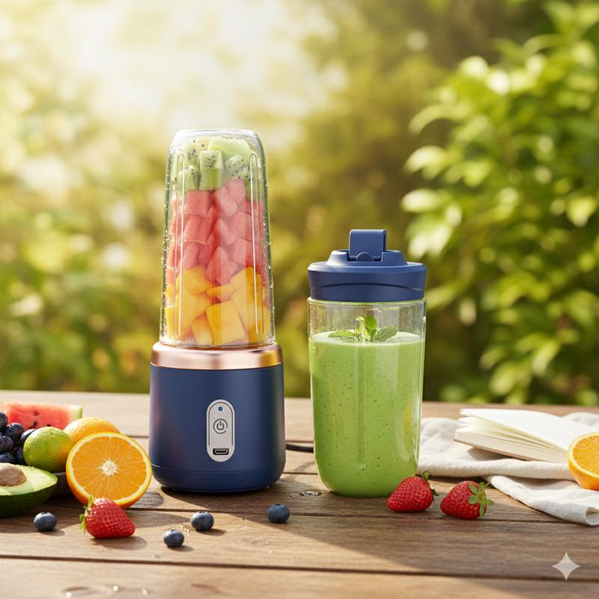
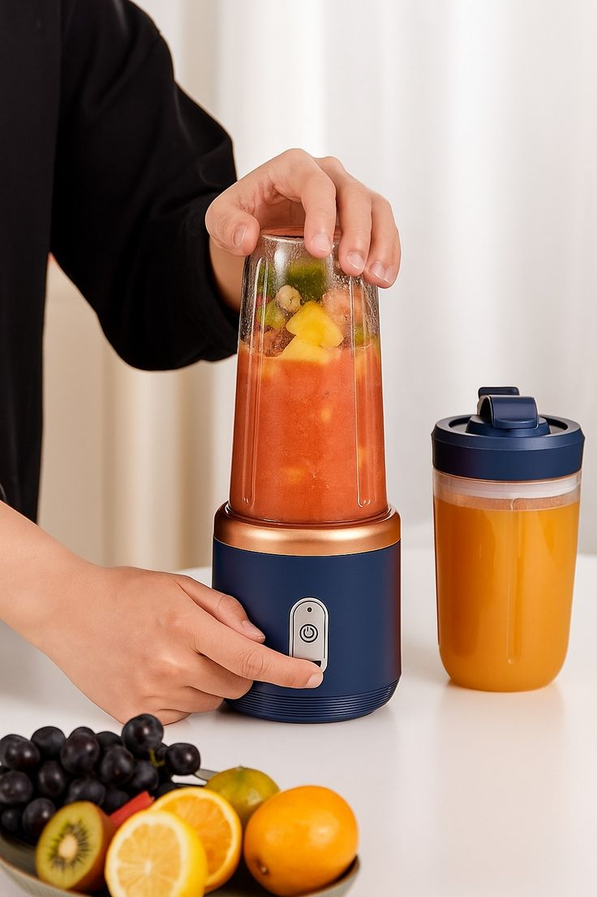

It typically features USB-rechargeable batteries, stainless steel blades, and a 300-500ml container that doubles as a drinking cup, making it ideal for travel, gym, or office us.


Whether you’re making a quick breakfast smoothie, a post-workout shake, or a fruit juice on the go, this blender makes healthy living simple and convenient.
Key Features and Benefits